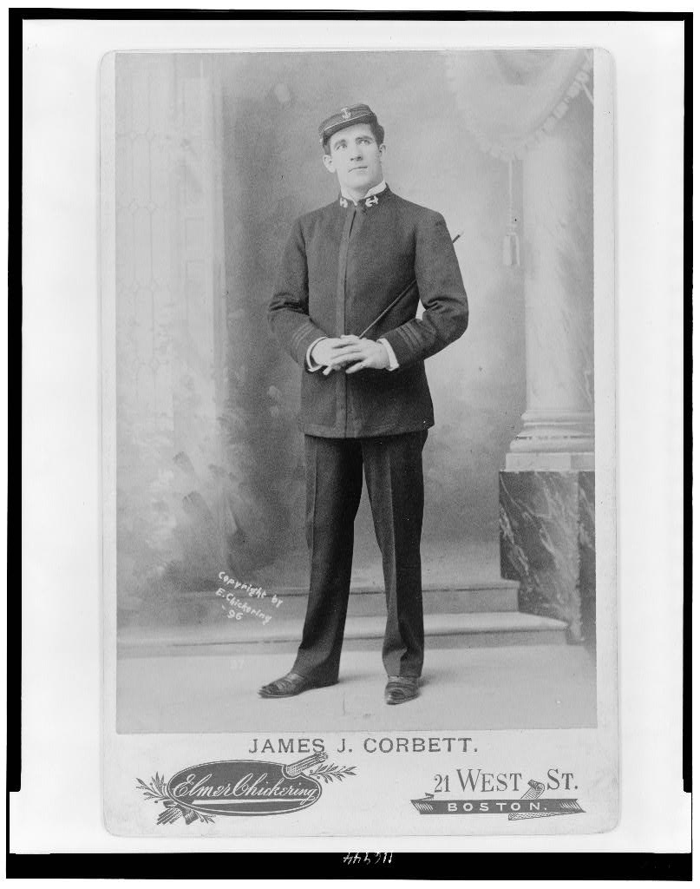

The Royal Studio
Elmer Chickering, Proprietor
21 West Street, Boston, Massachusetts
JAMES J. CORBETT, known to admirers as "Gentleman Jim," stands as the embodiment of modern scientific boxing. Born in San Francisco on September 1, 1866, to Irish immigrant parents Patrick Corbett and Katherine McDonald, he rose from humble origins as a bank clerk to become the most celebrated pugilist of his generation.
On the memorable evening of September 7, 1892, at the Olympic Club of New Orleans, Mr. Corbett achieved what many deemed impossible—he defeated the seemingly invincible John L. Sullivan, "The Boston Strong Boy," in twenty-one rounds to claim the World's Heavyweight Championship. This historic contest, conducted under the Queensberry Rules, marked the dawn of modern boxing.
Mr. Corbett's revolutionary approach emphasizes speed, scientific footwork, and defensive mastery over brute strength. Under the expert management of the theatrical impresario William A. Brady, he has elevated the sporting art to unprecedented respectability. The champion maintains his supremacy through rigorous training at the Olympic Athletic Club of San Francisco, where he first developed his distinctive style under the tutelage of Walter Watson.
Beyond the ring, Mr. Corbett has distinguished himself upon the theatrical stage, appearing in productions arranged by Mr. Brady. His younger brother, Joseph Corbett, has achieved notable success as a pitcher with the Baltimore Orioles of the National League.